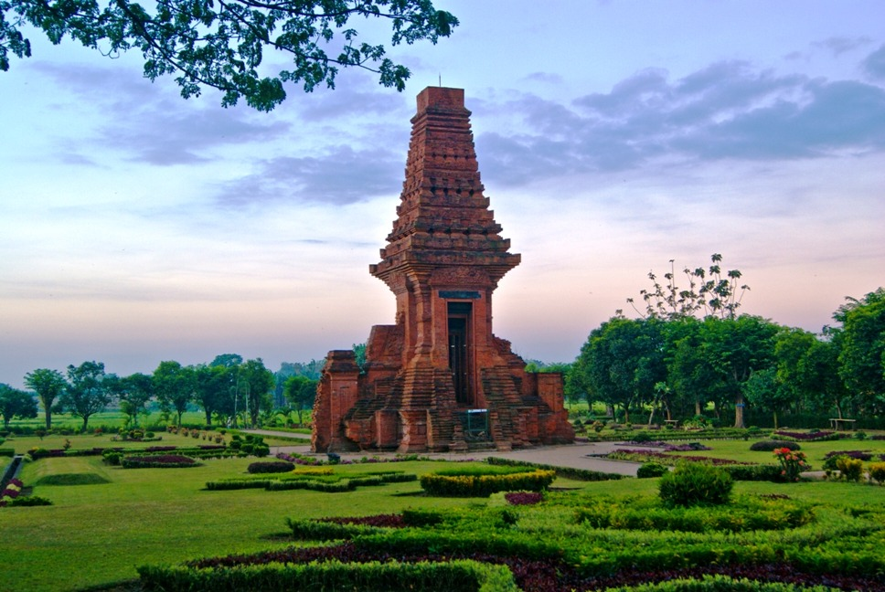
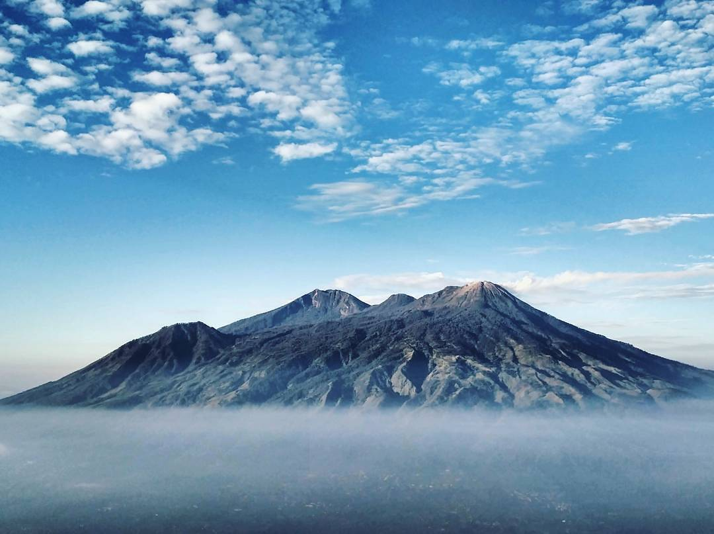

Candi Bajangratu

A remarkable historical gate in Trowulan, known for its distinctive red-brick architecture and connection to the heritage of the Majapahit era.
Discover the historical charm of Mojokerto through its ancient temples, heritage sites, and remarkable architecture.

A remarkable historical gate in Trowulan, known for its distinctive red-brick architecture and connection to the heritage of the Majapahit era.

A beautiful mountain in East Java known for its scenic landscapes and challenging hiking trails, offering an exciting experience for nature and adventure enthusiasts.